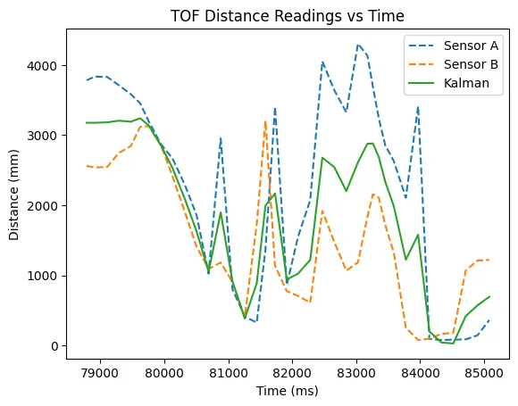
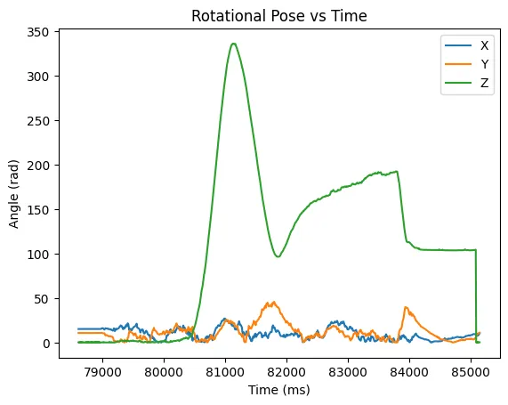
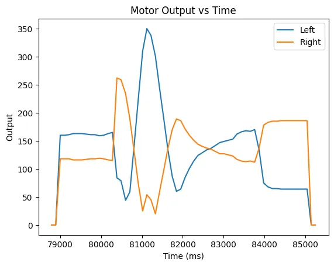

Lab 8 - Stunts!
3.23.23Introduction
Finally, its time for stunts! I've constructed a robust robot and communications system so that the robot can reliably execute dynamic movements. In this lab I made the robot execute a drifting turn just before hitting a wall. My goal was to execute the manuever as quickly as possible.
New Techniques
This stunt is very similar to what I did in lab 6. For the gorey details, see my Lab 6 Write-up. It also builds on the Kalman Filter I implemented in Lab 7.
The main difference between this turn and the one executed in lab 6 is the use of a Kalman filter for estimating the distance between the robot and the wall. This allows my control loop to run at 1 kHz instead of the TOF's sampling speed of ~6 Hz. Each time the motor's speed is updated I run the prediction step of the KF:
float speed_avg = (output_left + output_right) / 2;
distance_filter.update({speed_avg / 130}, {0}, false);
Note that I pass 0 as the distance measurement, but it isn't used because I set the flag for executing the update step to false. I also divide the input by 130 because this was the speed I used in my calculations of the robot dynamics. using this technique allowed me to increase the base speed of the robot up to 60% duty cycle, a 15% improvement over my lab 6. Additionally, the requirements for how close the robot is to the wall before turning is much tighter.
Drift Turn
Below are three runs of my stunt, followed by sensor readings. All were started behind a line 12 floor tiles (~ 4m) from the wall, and began executing the turn within 3 tiles of the wall.
Stunt time: 4.35 seconds
Stunt time: 4.68 seconds
Stunt time: 4.73 seconds
Average time: 4.58 seconds
Best time: 4.35 seconds



Bloopers
It just really wants to go in the trash.